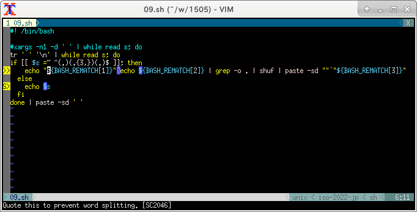

〜2015年5月上旬〜
まあ、そういうわけでamazon-simpledb-cliがインストールできなくて、
他の方法を探していたというのが昨日の真相。
% cpan Amazon::SimpleDB::Client
Reading '/home/eban/.cpan/Metadata'
Database was generated on Sat, 02 May 2015 01:29:02 GMT
Running install for module 'Amazon::SimpleDB::Client'
Fetching with LWP:
http://www.cpan.org/authors/id/D/DT/DTRISCHUK/Coro-Amazon-SimpleDB-0.04.tar.gz
Fetching with LWP:
http://www.cpan.org/authors/id/D/DT/DTRISCHUK/CHECKSUMS
Checksum for /home/eban/.cpan/sources/authors/id/D/DT/DTRISCHUK/Coro-Amazon-SimpleDB-0.04.tar.gz ok
'YAML' not installed, will not store persistent state
Configuring D/DT/DTRISCHUK/Coro-Amazon-SimpleDB-0.04.tar.gz with Makefile.PL
Checking if your kit is complete...
Looks good
Warning: prerequisite Amazon::SimpleDB::Client 0 not found.
Warning: prerequisite AnyEvent 0 not found.
Warning: prerequisite AnyEvent::HTTP 0 not found.
Warning: prerequisite Coro 0 not found.
Warning: prerequisite Coro::AnyEvent 0 not found.
Warning: prerequisite EV 0 not found.
Warning: prerequisite Moose 0 not found.
Generating a Unix-style Makefile
Writing Makefile for Coro::Amazon::SimpleDB
Writing MYMETA.yml and MYMETA.json
DTRISCHUK/Coro-Amazon-SimpleDB-0.04.tar.gz
/usr/bin/perl Makefile.PL INSTALLDIRS=site -- OK
Running make for D/DT/DTRISCHUK/Coro-Amazon-SimpleDB-0.04.tar.gz
---- Unsatisfied dependencies detected during ----
---- DTRISCHUK/Coro-Amazon-SimpleDB-0.04.tar.gz ----
Coro::AnyEvent [requires]
EV [requires]
Moose [requires]
Amazon::SimpleDB::Client [requires]
AnyEvent::HTTP [requires]
Coro [requires]
AnyEvent [requires]
Recursive dependency detected:
Amazon::SimpleDB::Client (have: N/A; want: 0.04)
=> DTRISCHUK/Coro-Amazon-SimpleDB-0.04.tar.gz
=> Amazon::SimpleDB::Client (have: N/A; requires: 0).
Cannot resolve.
DTRISCHUK/Coro-Amazon-SimpleDB-0.04.tar.gz
[depend] -- NOT OK
Amazon::SimpleDB::ClientとCoro::Amazon::SimpleDBが互いに依存してしまっている。
cat file > file こんなやつ。
リダイレクトはシェルが面倒見てるのでコマンドが実行される前に処理される。
だから> fileで空になりそれを読んでも後の祭りになる。
cat file | cmd1 | cmd2 > fileとした場合はバッファ次第でうまくいくこともあるが、
結局のところ> fileが元凶なのでこれをなくさないといけない。
解決方法を少々。まずは全部読んでから書き込む。
sort -o fileとかsponge fileとかawk 'END{printf "%s", $0 > "file"}' RS='\0'とか。
dd bs=1G of=fileでもいけそうだが、結構早いタイミングでtruncateされるので残念ながら使えない。
あとはinplace modeを備えているperl, ruby, sedとか最近のgawkとか。
このあたりの処理は内部的に一時ファイルへ書き込み、名前を戻している。
こんな感じだ。
% cat file > tmp; mv tmp file
これをmvせずに実現する方法がある。
stackoverflowあたりで見た記憶があるが、一目ではちょっと理解しがたい。
見た目rmが最初に出てくるので。
% (rm file; cat > file) < file
これは最後の< fileが一番先に評価されてfd0が切り替わる。
rm fileしてもopenしたままなのでfile自体は活きている。
この状態でcat > fileすると違うi-nodeのfileに書かれるので、
元のfileが上書きされることはない。
ということは< fileと> fileのfileは別物として扱われる。
つまりやってることは一時ファイル作ってmvするのと大して変わらない。
でもぶつからない一時ファイル名を考えないといけないとか面倒なので、
そこそこ需要がある。
2400通ほど。ruby-talk MLへのspam bombが効いた。
話題のShellCheck。Ubuntuもパッケージがあるのでインストールは楽だ。
ShellCheck is a static analysis and linting tool for sh/bash scripts.
ということでいろいろチェックしてくれる。
先日の100本ノックの09をかけてみるとこんな感じだ。
% shellcheck 09.sh
In 09.sh line 6:
echo "${BASH_REMATCH[1]}"`echo ${BASH_REMATCH[2]} | grep -o . | shuf | paste -sd ""`"${BASH_REMATCH[3]}"
^-- SC2046: Quote this to prevent word splitting.
^-- SC2006: Use $(..) instead of deprecated `..`
^-- SC2086: Double quote to prevent globbing and word splitting.
In 09.sh line 8:
echo $s
^-- SC2086: Double quote to prevent globbing and word splitting.
実際は色がつく。カラムまで表示してくれるのでわかりやすい。
-f gccとすればエディタが認識してくれる形式になる。
% shellcheck -f gcc 09.sh 09.sh:6:30: warning: Quote this to prevent word splitting. [SC2046] 09.sh:6:30: note: Use $(..) instead of deprecated `..` [SC2006] 09.sh:6:36: note: Double quote to prevent globbing and word splitting. [SC2086] 09.sh:8:10: note: Double quote to prevent globbing and word splitting. [SC2086]
VimならSyntasticが入っていれば勝手に使われる。

TOIlet prints text using large characters made of smaller charactersということらしいが、
なんでこんな名前をつけたのか？
FIGletとletしか合ってないじゃないか。
まあ、それはいいとして、色がついたりひらがなやカタカナが使えるあたりがうれしい。
漢字が使えれば完璧だが。
% toilet -F crop あいうえお m "mm m m mmm#m"" m mmmm "" # m m #mm#m # ""m "" # "mm""# ""#" "# m# m" "m # m # # m" #m"""m # "m" # "m# "# # m""m m#"# m # "m" mm" " m" m" "mmm "# ""
フィルターにはhtmlもある。
% toilet -F crop --metal --html あいうえお | sed '/<div/,$!d;s,</body></html>\|<br />,,g;s/^/HTML /' > aioeo.txtm "mm m m mmm#m"" m mmmm "" # m m #mm#m # ""m "" # "mm""# ""#" "# m# m" "m # m # # m" #m"""m # "m" # "m# "# # m""m m#"# m # "m" mm" " m" m" "mmm "# ""
HTMLはちょっと力技だな。
先日の-iの挙動をperlで確認してしてみたら、一時ファイルは作ってなかった。
というかrmするほうとまったく同じ方法だった。
% seq 10 > file
% strace -e trace=open,read,write,unlink,rename perl -i -pe 's/0/o/g' file
<前略>
open("file", O_RDONLY) = 3
unlink("file") = 0
open("file", O_WRONLY|O_CREAT|O_EXCL, 0600) = 4
read(3, "1\n2\n3\n4\n5\n6\n7\n8\n9\n10\n", 8192) = 21
read(3, "", 8192) = 0
write(4, "1\n2\n3\n4\n5\n6\n7\n8\n9\n1o\n", 21) = 21
+++ exited with 0 +++
まさにopenしてからunlinkしている。-i~にするとunlinkの代わりにrenameになる。
% seq 10 > file
% strace -e trace=open,read,write,unlink,rename perl -i~ -pe 's/0/o/g' file
<前略>
open("file", O_RDONLY) = 3
rename("file", "file~") = 0
open("file", O_WRONLY|O_CREAT|O_EXCL, 0600) = 4
read(3, "1\n2\n3\n4\n5\n6\n7\n8\n9\n10\n", 8192) = 21
read(3, "", 8192) = 0
write(4, "1\n2\n3\n4\n5\n6\n7\n8\n9\n1o\n", 21) = 21
+++ exited with 0 +++
それしても-pでも行ごとに書き込まないのは意外だ。
unlinkする方法はrubyも同じ。というのもここら辺はperlの処理をまねているから。
Windowsではopenしたままのファイルを削除できないので、
必ずバックアップを残す-i~のような指定を強制される。
% strace -e trace=open,read,write,unlink,rename ruby -i -pe 'gsub(/0/,"o")' file
<前略>
open("file", O_RDONLY|O_CLOEXEC) = 7
unlink("file") = 0
open("file", O_WRONLY|O_CREAT|O_TRUNC|O_CLOEXEC, 0666) = 8
read(7, "1\n2\n3\n4\n5\n6\n7\n8\n9\n10\n", 8192) = 21
write(8, "1\n", 2) = 2
write(8, "2\n", 2) = 2
write(8, "3\n", 2) = 2
write(8, "4\n", 2) = 2
write(8, "5\n", 2) = 2
write(8, "6\n", 2) = 2
write(8, "7\n", 2) = 2
write(8, "8\n", 2) = 2
write(8, "9\n", 2) = 2
write(8, "1o\n", 3) = 3
read(7, "", 8192) = 0
write(4, "!", 1) = 1
+++ exited with 0 +++
-i~もperlと同じでunlinkがrenameになるだけ。
一方sedは一時ファイルを使う。
% seq 10 > file
% strace -e trace=open,read,write,unlink,rename sed -i 's/0/o/g' file
<前略>
open("file", O_RDONLY) = 3
open("./sedHzMdIJ", O_RDWR|O_CREAT|O_EXCL, 0600) = 4
read(3, "1\n2\n3\n4\n5\n6\n7\n8\n9\n10\n", 4096) = 21
write(4, "1\n", 2) = 2
write(4, "2\n", 2) = 2
write(4, "3\n", 2) = 2
write(4, "4\n", 2) = 2
write(4, "5\n", 2) = 2
write(4, "6\n", 2) = 2
write(4, "7\n", 2) = 2
write(4, "8\n", 2) = 2
write(4, "9\n", 2) = 2
write(4, "1o\n", 3) = 3
read(3, "", 4096) = 0
rename("./sedHzMdIJ", "file") = 0
+++ exited with 0 +++
これならopenしたまま削除にはならないのでWindowsでも-iは有効なはず。
それにしてもカレントディレクトリに作るのはちょっと意外。
gawkも一時ファイルを使う。
% seq 10 > file
% strace -e trace=open,read,write,unlink,rename gawk -i inplace '{gsub(/0/,"o")}1' file
<前略>
open("file", O_RDONLY) = 3
open("file.gawk.BPv947", O_RDWR|O_CREAT|O_EXCL, 0600) = 4
read(3, "1\n2\n3\n4\n5\n6\n7\n8\n9\n10\n", 21) = 21
write(1, "1\n", 2) = 2
write(1, "2\n", 2) = 2
write(1, "3\n", 2) = 2
write(1, "4\n", 2) = 2
write(1, "5\n", 2) = 2
write(1, "6\n", 2) = 2
write(1, "7\n", 2) = 2
write(1, "8\n", 2) = 2
write(1, "9\n", 2) = 2
write(1, "1o\n", 3) = 3
read(3, "", 21) = 0
rename("file.gawk.BPv947", "file") = 0
+++ exited with 0 +++
これもカレントディレクトリか。
まあ、どちらもGNUだけにそのあたりは同じなのかも。
\bで戻すんじゃあまり役に立たないが、
コメントにあるようにprintfでつなげればいいわけだ。
$ printf %s $_{1..3}+; echo
+++
なかなか素晴しい。数字はどこに消えたかというと変数名の一部になっている。
$_{1..3}+は$_1+ $_2+ $_3+と展開されるが、_1 _2 _3という変数は存在しないので空と同じ。
よって+だけ残る。printfのformatは引数のほうが多い場合は再利用される。
$ printf %s $_1+ $_2+ $_3+; echo $ printf %s + + +; echo $ printf %s%s%s + + +; echo
こんな感じになる。とういうわけで_1等が存在してる破綻するのでちょっと具合が悪い。
さらにzshの場合はbrace展開よりも$_のほうが先に評価されるのでさらに都合が悪い。
% date
Thu May 7 00:55:09 JST 2015
% printf %s $_{1..3}+; echo
date1+date2+date3+
そこで発想ちょっと変えて+を前に持ってくる。で、formatで1文字だけ表示するようにする。
% printf %.1s +{1..3}; echo
+++
こうすればbashでもzshでもokだ。
ここまでくれば3を変数にしたいところだが、なかなかうまくいかない。
zshならokだがbashだとevalしないといけない。
% zsh -c 'n=5; printf %.1s +{1..$n}; echo'
+++++
% bash -c 'n=5; printf %.1s +{1..$n}; echo'
+
% bash -c 'n=5; eval printf %.1s +{1..$n}; echo'
+++++
brace展開されないので+{1..5}がprintfに渡っている。
eval使うぐらいならseqのほうがいいかもしれない。
% bash -c 'n=5; printf %.1s `seq -f +%g $n`; echo' +++++
そういえばあったなと確認する。@変数名()みたいな感じで呼び出せる。
% echo foo | gawk 'func foo(){print "foo!"}func bar(){print "bar!"}{@$0()}'
gawk: コマンドライン:1: func foo(){print "foo!"}func bar(){print "bar!"}{@$0()}
gawk: コマンドライン:1: ^ syntax error
gawk: コマンドライン:1: func foo(){print "foo!"}func bar(){print "bar!"}{@$0()}
gawk: コマンドライン:1: ^ syntax error
gawk: コマンドライン:1: func foo(){print "foo!"}func bar(){print "bar!"}{@$0()}
gawk: コマンドライン:1: ^ syntax error
% echo foo | gawk 'func foo(){print "foo!"}func bar(){print "bar!"}{@($0)()}'
gawk: コマンドライン:1: func foo(){print "foo!"}func bar(){print "bar!"}{@($0)()}
gawk: コマンドライン:1: ^ syntax error
gawk: コマンドライン:1: func foo(){print "foo!"}func bar(){print "bar!"}{@($0)()}
gawk: コマンドライン:1: ^ syntax error
gawk: コマンドライン:1: func foo(){print "foo!"}func bar(){print "bar!"}{@($0)()}
gawk: コマンドライン:1: ^ syntax error
いきなり怒られた。組み込み変数はだめか。
% echo foo | gawk 'func foo(){print "foo!"}func bar(){print "bar!"}{f=$0;@f()}'
foo!
% echo bar | gawk 'func foo(){print "foo!"}func bar(){print "bar!"}{f=$0;@f()}'
bar!
動いた。存在しないもの呼ぶとどうなるか？
% echo hoge | gawk 'func foo(){print "foo!"}func bar(){print "bar!"}{f=$0;@f()}'
gawk: コマンドライン:1: (FILENAME=- FNR=1) 致命的エラー: 内部エラー: セグメンテーション違反
SEGVとは穏やかでないが、4.1.2では直ってるようだ。
% echo hoge | ~/local/bin/gawk-4.1.2 'func foo(){print "foo!"}func bar(){print "bar!"}{f=$0;@f()}'
gawk-4.1.2: コマンドライン:1: (FILENAME=- FNR=1) 致命的: `hoge' is not a function, so it cannot be called indirectly
他にもそんなことになってる人がいるかとw3m gooogle refreshをchromeでぐぐったら出てきた。
BUG: Search result HTML includes META REFRESH, causes looping until banned
しかし、botのような人が対応してて埒が開かないようで。
Refresh(0 sec)がunusual trafficの原因なのに、
unusual trafficだからだと答えられてもねえ。
一度CAPTCHAが表示されると連続で出てきてうっとうしい。
しかもIPアドレスでbanされるようで、他のブラウザでも出てくる。
面倒なのでオプションでmeta refreshを切った。なくても困らないし。
秘密のやりとりいたします。
どおいうときぶうたつさいえん んと
暗号棒に巻き付けるので、文字を何個か飛びに拾ってけばいい。
スパルタで使われたスキュタレー暗号だ。
ならgrep -o .してxargs -nでいけそう。
% grep -o . pitagora.txt | xargs -n2 ど お い う と き ぶ う た つ さ い え ん ん と % grep -o . pitagora.txt | xargs -n3 ど お い う と き ぶ う た つ さ い え ん ん と
おお、いけた。横書きにしよう。
% grep -o . pitagora.txt | xargs -n3 | awk '{a=a$1;b=b$2;c=c$3}END{print a"\n"b"\n"c}'
どうぶつえん
おとうさんと
いきたい
というわけで解けました。実際は
おとうさんと どうぶつえん いきたい
だったが、気にしない。
重複してる行だけを抜き出すにはuniq -dを使う。
% (seq 10; seq 5 8) | sort | uniq -d 5 6 7 8
でかいデータのときはsortしたくないときもある。
そこでawkだ。
% (seq 10; seq 5 8) | awk '++a[$0] == 2' 5 6 7 8
a[$0]++ == 1でもいいが、2個以上の2が表に出てきたはほうがわかりやすい。
2回目に出てきた順番に表示される。
% (seq 10; seq 5 8 | tac) | awk '++a[$0] == 2' 8 7 6 5